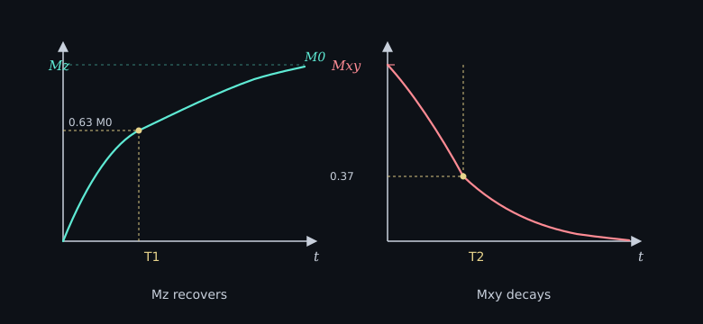

Continues from the RF pulse. After a 90°, M is in xy and does not stay there.
Two recoveries run at once. Each has its own time constant.
T1 is how fast Mz grows back toward M0, the equilibrium along B0. After a 90° pulse:
Mz(t) = M0 (1 − exp(−t/T1))
People call it spin-lattice relaxation: the spins dump energy into the surroundings. Fat has a short T1. CSF has a long T1. That difference is later used as contrast. T1 is a time, in milliseconds to seconds, for that tissue.
T2 is how fast the xy component disappears:
Mxy(t) = Mxy(0) exp(−t/T2)

Neighboring spins nudge each other’s fields, so the pack dephases even in a perfect B0. T2 is always shorter than T1. Real coils also see extra dephasing from shims and tissue susceptibility. That faster number is T2*, not T2. Different constant. Leave it for another note.
A T1-weighted image is not a T1 map. Weighted means you picked TR and TE so tissues with different T1 look brighter or darker. A T1 map is a voxel-wise fit of the time constant itself. Do not read a bright pixel as “this voxel’s T1.” Same split for T2-weighted vs T2 map.
Next note: TE/TR contrast is not in this set yet.